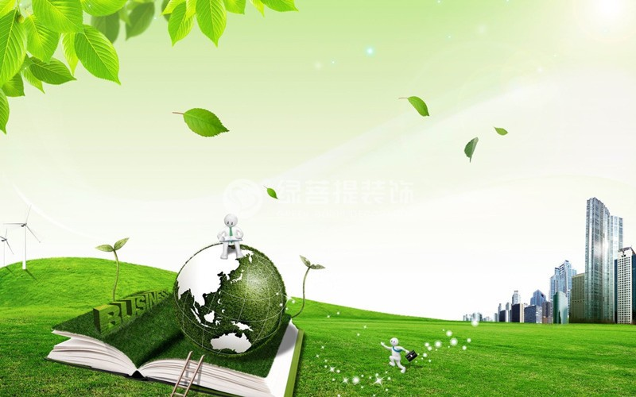

环保，即环境保护（Environmental Protection），是在个人、组织或政府层面，为大自然和人类福祉而保护自然环境的行为。由于工业发展导致环境污染问题过于严重，损害生态环境，部分更达到无法挽回的地步，触发各工业化国家对环境的重视，继而利用国家法律法规去规管和处理污染问题，并作出宣传使全社会注意污染对环境的深远影响。
环境保护简称环保。环境保护（environmental protection）涉及的范围广、综合性强，它涉及自然科学和社会科学的许多领域，还有其独特的研究对象。环境保护方式包括：采取行政、法律、经济、科学技术、民间自发环保组织等等，合理地利用自然资源，防止环境的污染和破坏，以求自然环境同人文环境、经济环境共同平衡可持续发展，扩大有用资源的再生产，保证社会的发展。
为了防止自然环境的恶化，对山脉、绿水、蓝天、大海的保护。这里就涉及到了不能私自采矿或滥伐树木, 尽量减少乱排（污水）乱放（污气）、不能过度放牧、不能过度开荒、不能过度开发自然资源、不能破坏自然界的生态平衡等等，这个层面属于宏观的，主要依靠各级政府行使自己的职能、进行调控，才能够解决。对自然的保护要做到人人有责!保护环境是中国长期稳定发展的根本利益和基本目标之一，实现可持续发展依然是中国面临的严峻挑战。政府在人类社会发展进程中同时扮演着保护环境与破坏环境的双重角色，负有不可推卸的环境责任。环境保护是政府必须发挥中心作用的重要领域。毫无疑问，导致资源破坏和环境污染的两大重要原因是市场失灵和政府失灵，这两方面原因都同发展和政府有着密切的关系。所以，环境保护在很大程度上依赖于政府，也是国家长期坚持做的一项民生工程。同样意味着城市将成为环境治理的主要推动者，也将是城市环境改善、公共设施建设和项目技术的最大买家群体。
